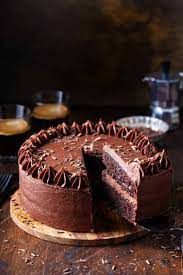

Chocolate Cake

Chocolate cake is a delicious dessert that is loved by people of all ages. This cake is made with chocolate, flour, sugar, eggs, and butter. There are many different variations of chocolate cake, such as dark chocolate cake, white chocolate cake, and chocolate fudge cake. Some people like to add additional ingredients to their chocolate cake, such as nuts, fruit, or chocolate chips. Chocolate cake can be served with a variety of toppings, such as whipped cream, frosting, or fruit. It is perfect for special occasions or as an indulgent treat on a lazy afternoon.
Ingredients
- 200g golden caster sugar
- 200g unsalted butter, softened plus extra for the tins
- 4 large eggs
- 200g self-raising flour
- 2 tbsp cocoa powder
- 1 tsp baking powder
- ½ tsp vanilla extract
- 2 tbsp milk
Steps
- Heat oven to 190C/170C fan/gas 5. Butter the base and sides of two 20cm round sandwich tins and line the bases with baking parchment.
- In a large bowl, beat together 200g golden caster sugar, 200g softened unsalted butter, 4 large eggs, 200g self-raising flour, 2 tbsp cocoa powder, 1 tsp baking powder, ½ tsp vanilla extract, 2 tbsp milk and a pinch of salt until pale.
- Divide the mixture between the prepared tins. Bake for 20 mins or until a skewer inserted into the centre of the cake comes out clean..
- Leave to cool in the tin for 10 mins, then turn out onto a wire rack to cool completely.